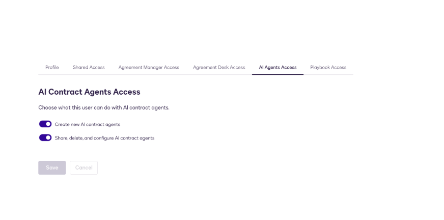
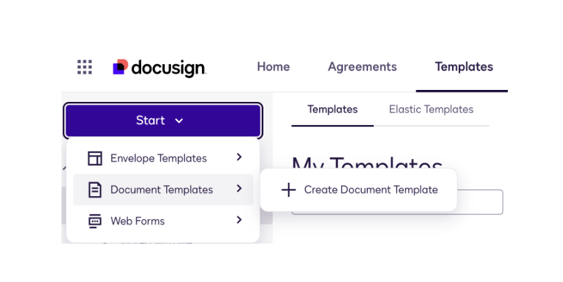
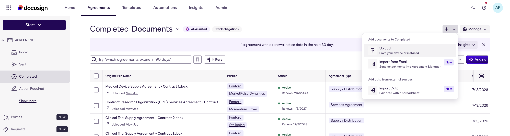
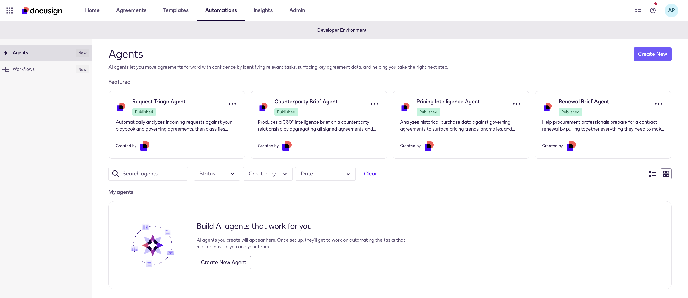
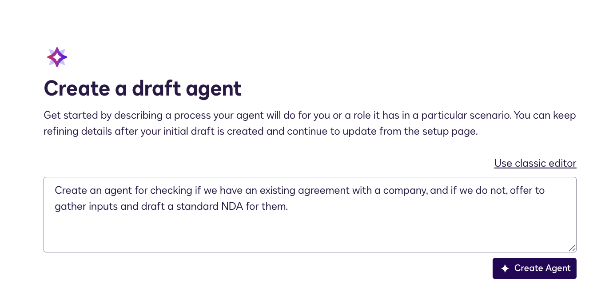
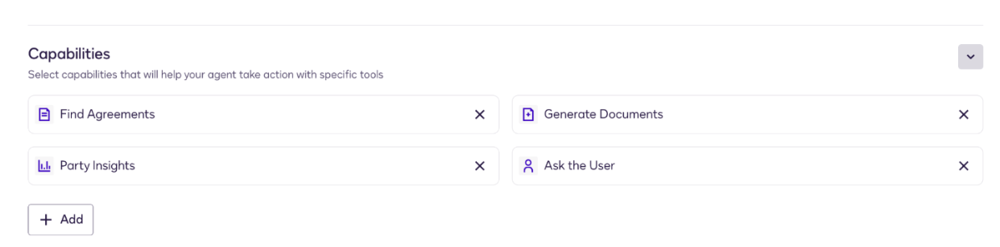
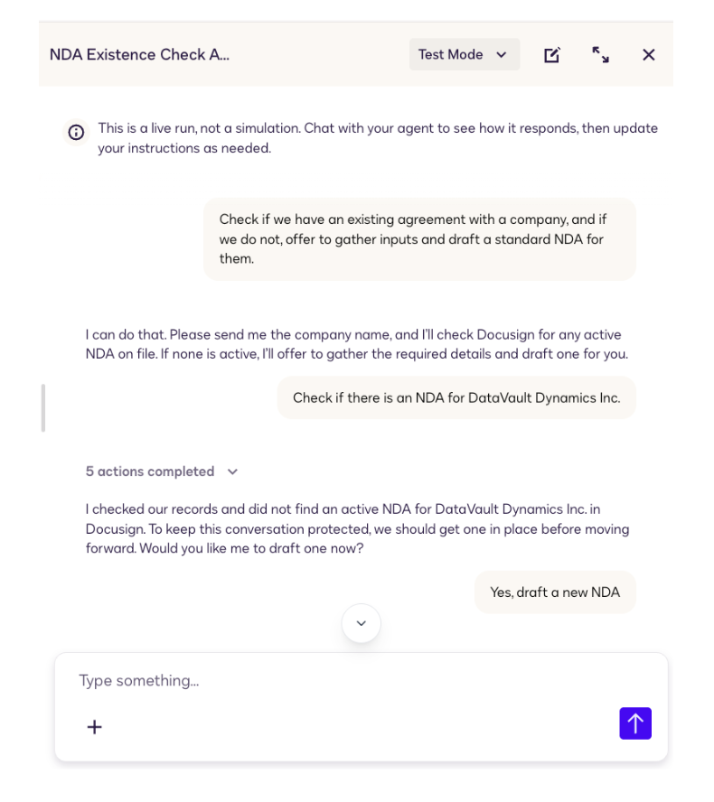
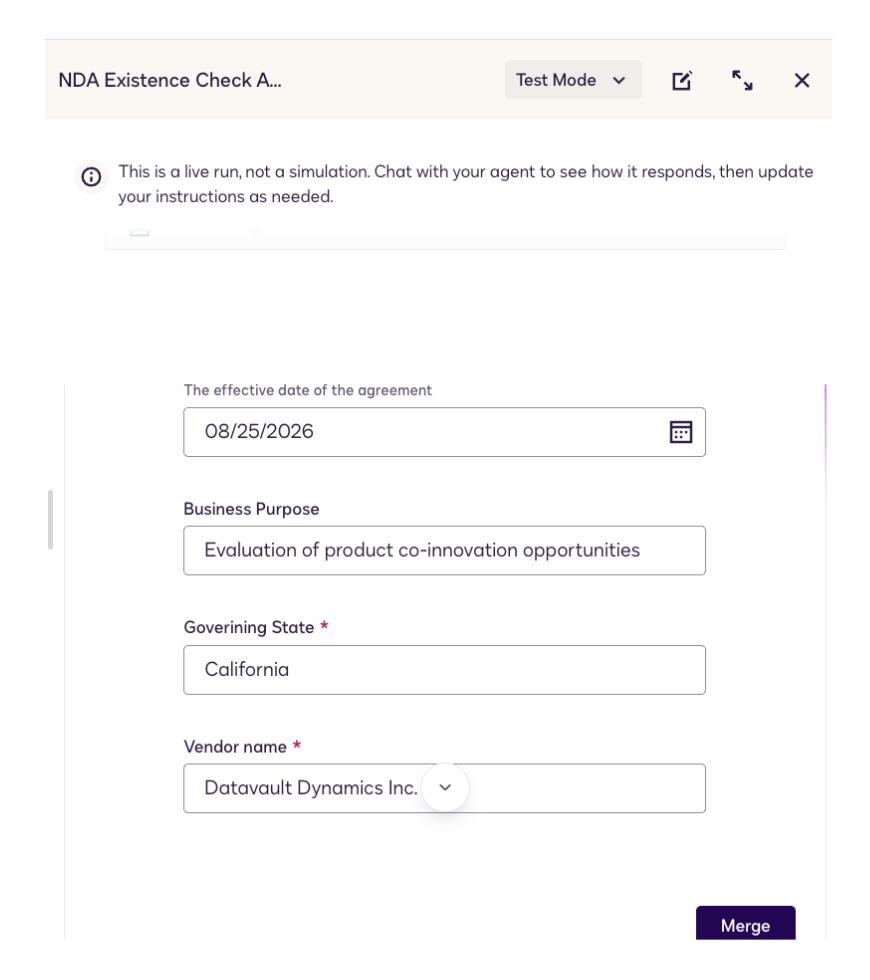
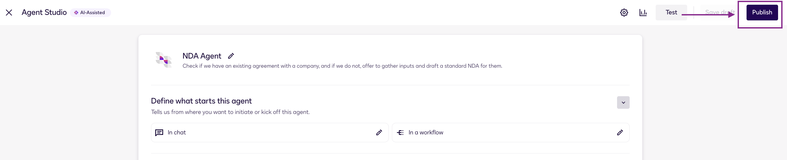
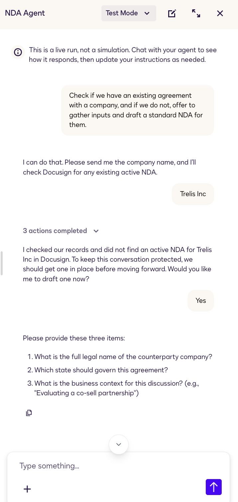

Search-to-Draft NDA Assistant: Agreement Manager search + interactive drafting in Agent Studio
Build an interactive agent that handles real-world friction: it thoroughly searches for an existing agreement, pivots smoothly when nothing is found, gathers the right inputs, and produces a ready to download NDA on the spot.
Before you begin
0.1 · Purpose & business outcome
A Sales rep is about to get on a discovery call with a prospect. Before they share roadmap details or pricing, they need to know: is there an NDA in place?
The current answer involves emailing Legal, waiting, and hoping. This lab replaces that with an agent that does the lookup instantly and, when nothing is found, collects the required inputs needed to produce a ready-to-send NDA without leaving the chat window.
The agent uses Docusign Agreement Manager as its source of truth and document generation as its output. Two capabilities, one conversation: confirm coverage or create it, right inside Ask Iris.
0.2 · The flow at a glance
0.3 · Explore the conversation flow before you build it
This is the exact conversational logic you'll build in Stage 1. Change the control below the diagram and watch the live path light up. That is the branch your agent will take at runtime.
0.4 · Learning objectives
Initialize the agent framework in Agent Studio with a single-sentence goal and let AI auto-select the right capabilities.
Write instructions that prevent false negatives (partial-match search), pivot gracefully on zero results, and refuse to guess missing inputs.
Automatically generate the final NDA, ready to download.
0.5 · Prerequisites
A Docusign IAM (Intelligent Agreement Management) environment - sandbox or non-production - with the features and permissions below. Everything uses synthetic data only, no production accounts or real party data.
0.5.1 · Products enabled
setup- Agent Studio - enabled. Your PSA or facilitator will confirm this is switched on for your partner sandbox.
- Agreement Manager - available for storing and searching agreements.
- Document Templates - available for uploading NDA templates.
0.5.2 · Permissions
setupEach participant or pair needs:
- Agent Studio build access - enabled by an org admin before Stage 1. Click path below.
- Open the Admin tab at apps-d.docusign.com/admin/admin-dashboard.
- Go to Users and find the participant's account row.
- Click Actions next to their name, then select Manage AI Agents Access.
- Under AI Agents Access, enable:
- Create new AI contract agents
- Share, delete, and configure AI contract agents
- Click Save.
0.5.3 · Download the lab assets
setupFrom the GitHub repo your facilitator provides, download:
| Asset | What it's for |
|---|---|
nda_template.docx | The NDA document template you'll upload to Document Templates. |
sample_nda.pdf | A sample NDA agreement to upload to Agreement Manager for testing. |
0.5.5 · Upload sample agreements
setup- Upload the NDA template provided in the workshop kit to Document Templates.

- Go to Agreements in your account.
- Navigate to Completed.
- Click the + icon and select Upload.
- Upload the sample NDA provided in the workshop kit.

0.6 · How to use this handbook
| Element | What it means |
|---|---|
| Step checkbox | The box next to each numbered heading. Tick it when done; the sidebar ring for that stage fills. |
| Prompt block | Copy-paste ready. Use the Copy button in the top-right corner. |
| Checkpoint | The green box at the end of a step. Don't move on until it's true. |
| Note / warning | Amber and red boxes flag the gotchas that reliably burn time in workshops. |
Stage 1 · Build the agent
Five steps take you from a blank Automations tab to a working, tested Search-to-Draft NDA Assistant.
1.1 · Accessing the Agent Studio
build- Go to the tab Automations.
- Click the Create New button in the top-right corner.

1.2 · Initial draft
buildInitialize the agent framework using natural language to explain its fundamental goal.
- Click into the central description text block titled "Describe what you want your agent to accomplish…".
- Input the following initialization string:
- Click the Create Agent button in the bottom-right corner.

1.3 · Define what starts this agent
build- Under "Define what starts this agent", edit In chat.
- In the prompt field, type:
- Click Save, then scroll to the bottom and click Save again.
1.3.1 · Validate the capabilities
buildWhen you created the agent from the description in 1.2, Agent Studio pre-selected a set of capabilities. Verify the selection before adding your instructions.
- Scroll down to the Capabilities section on the agent setup page.
- Confirm the following are selected: Find Agreements, Generate Documents, Party Insights, Ask the User.

1.4 · Deploying the master instructions
buildScroll down to the Instructions* box, clear any generated text, and paste the full prompt below. This is a tested prompt; do not paraphrase the step logic or the pivot script wording, as those have been validated to produce consistent output.
1.5 · Test both conversation paths
test- Click Test in the top toolbar to open the test panel.
- Click on the prompt visible.
- Run the search path first: ask about a counterparty you know exists in Agreement Manager. The agent should return a summary and stop, with no offer to draft.
- Run the draft path: ask about a counterparty with no active agreement. The agent should deliver the scripted pivot response, then ask for the three inputs one by one, then produce the full NDA inside a single code block.


Provide sample inputs
Let's provide sample inputs for the questions it'll ask
- Effective Date
- Business Purpose
- Governing State
- Vendor name
- Verify the agent does not skip ahead to NDA generation if you provide only one or two of the three inputs. It should ask for what is missing.
1.6 · Publish the agent
build- Click Save draft to save the current state.
- Click Publish and confirm.

Stage 2 · Best practices & the agent in action
2.1 · Why each prompt design decision was made
designFour specific choices in the instructions prevent failure modes that would otherwise show up in production. Read these before the lab so you can explain them to a customer or modify them deliberately rather than accidentally.
| Decision | What breaks without it | How the prompt addresses it |
|---|---|---|
| Partial-match search requirement | A rep types "Brightpath" and the agent returns zero results, even though "Brightpath Technologies" is on file. The rep assumes there is no NDA and the deal proceeds unprotected. | The instructions require the agent to run both exact and partial name searches before reporting zero results. Any variation that shares a root with the input must be checked first. |
| Fixed pivot script wording | Left to its own phrasing, the agent might respond "No records found. Let me know if you need anything else" and stop. The rep does not know they can ask for a draft and moves on without one. | A specific response string is locked into the instructions. When the search comes back empty, the agent delivers the same offer every time, which means every rep sees the same clear next step. |
| Hard gate on NDA generation | AI models fill in missing fields rather than asking. An agent given only a company name might invent a governing state or fabricate a business purpose, producing an NDA with incorrect terms that a rep might send without noticing. | The instructions explicitly forbid generating any NDA text until all three inputs have been confirmed in the conversation. Partial input triggers a follow-up question, not a draft. |
| Standardized output | Without explicit formatting or wording instructions, the agent can generate inconsistent outputs. The rep has to manually route for NDA approvals. | The instructions require a pre-approved document template to be used to generate the NDA, ensuring consistency. Ready to download and send. |
2.2 · Run the agent from Ask Iris
runThis is the rep-facing surface. From Ask Iris, a Sales rep can check NDA status or generate a new agreement without submitting a formal request or leaving the conversation. Run both paths to confirm the published agent behaves identically to the Test panel.
- From the top navigation, click Agreements.
- Select Completed from the left sidebar to open the agreement list view.
- Click the Ask Iris button.
- Inside the Iris chat panel, click the plus sign (+) in the conversation input bar.
- Select Agents from the menu that appears.
- Find your published agent in the list and click it to start a conversation.
- Run the exists path: ask about a counterparty that has an active agreement in your tenant.
- Start a new conversation and run the draft path: ask about a counterparty with no agreement, confirm the pivot script, complete the intake, and verify the NDA is produced.

Stage 3 · The CLM connection
3.1 · Why CLM calls the agent instead of running it in chat
conceptAsk Iris is conversational: a rep asks a question, the agent responds, the rep acts. That works for one deal at a time. A CLM workflow is deterministic: every inbound NDA request follows the same path, without a human having to remember to ask.
The "Use AI Agent" step is the bridge. CLM is the orchestration surface; Agent Studio is the reasoning layer. The CLM workflow handles the structured steps (approvals, merges, signatures, archiving). The agent handles the part that requires judgment: check the repository, evaluate what exists, and return a structured answer the workflow can act on.
- Natural language instructions
- Capabilities (Find Agreements, etc.)
- Output format in JSON or XML
- Knowledge base and governance rules
- Selects the published agent
- Passes a starting prompt and document
- Stores the agent response as an XML variable
- Routes downstream steps based on that variable
3.2 · What the "Use AI Agent" step looks like for the NDA Gatekeeper
demoIn a CLM workflow for inbound NDA requests, the "Use AI Agent" step is configured with five fields. Here is how each one maps to the NDA Gatekeeper scenario:
| Field | Value for the NDA Gatekeeper |
|---|---|
| Agent | Select the published NDA Gatekeeper Assistant from the agent picker. |
| Chat Message | The starting prompt the workflow sends, e.g. "Review this NDA request for [Counterparty]. Check the agreement repository and return nda_status as JSON." |
| Document (optional) | If the inbound NDA has already been uploaded to the CLM record, pass it here so the agent can read it directly. |
| Run agent as | An admin user who has completed one-time OAuth consent for this environment. The consent link is per-environment and must be clicked before the first run. |
| Output variable | Store the result in AgentResponse. The workflow reads AgentFinalResponseXml from that variable to branch on nda_status. |
3.3 · What the output variable contains
demoAfter the agent runs, the step processes the response into a structured XML variable the workflow can reference. The top-level fields are:
For the NDA Gatekeeper, AgentFinalResponseXml contains the nda_status value the instructions require the agent to return. The CLM workflow reads it and routes accordingly:
| nda_status value | What the CLM workflow does next |
|---|---|
exists | Skip the NDA creation steps. Route to a notification step that informs the requester an active NDA is already on file. |
sent | A new NDA was just dispatched. Route to a waiting step until the envelope is signed, then archive and continue. |
error | The agent could not complete the check. Escalate to a Legal team task step for manual review. |
3.4 · What must be in place before a customer can use this
prereqsThe "Use AI Agent" step is available in CLM workflows but requires setup that goes beyond Agent Studio alone. Partners and customers need to confirm these items before the pattern goes live.
Licensing
- An active IAM license is required to use agents at all: IAM Professional, IAM Enterprise, IAM for Sales, or IAM Platform.
- Agent Studio must be available for the customer's IAM site and segment (currently: NA, non-FedRamp, non-HLS, English UI).
CLM-IAM interoperability
- CLM documents must be migrated into Agreement Manager and properly indexed before the agent can search them.
- Agreement Manager must be enabled for the relevant agreement types (e.g. NDAs) if the pattern involves post-sign repository checks.
Consent link (the step most often missed)
- The "Run agent as" admin user must click a one-time OAuth consent link per environment before the first CLM workflow run.
- This consent link is environment-specific. Sandbox consent does not carry over to production.
- Without it, the step fails silently at runtime with no visible error in the workflow log.
The full picture
You started this lab with a conversational agent that a Sales rep can invoke in a chat window. That same agent, without any changes to its instructions or capabilities, can be called as a step inside a CLM workflow that triggers automatically on every inbound NDA request. The agent handles the judgment layer; the CLM workflow handles the process layer. The combination gives you auditable, repeatable NDA handling at scale, without building two separate systems.